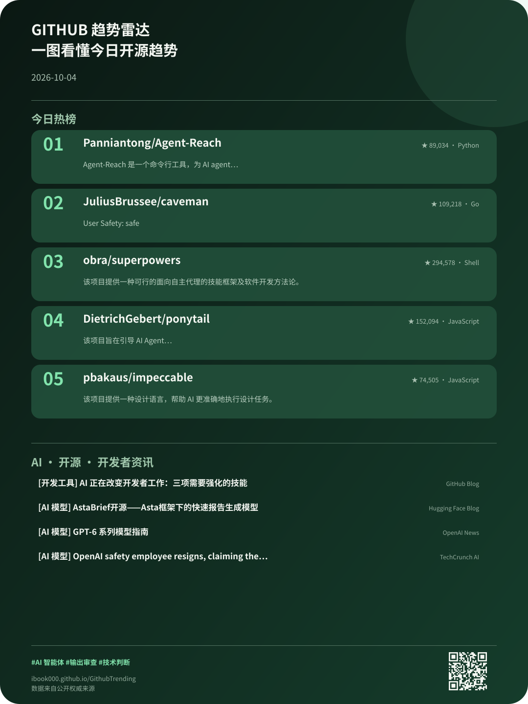

OPEN SOURCE SIGNAL · 2026-10-10
用一页热榜、权威科技资讯和一张趋势卡片，快速捕捉 AI、工具链与开源生态的变化。
TODAY AT A GLANCE
正在加载
头号项目
正在整理今天最值得关注的项目。
重点资讯
正在同步 AI 与开源生态新闻。
TRENDING REPOSITORIES
试试清空搜索、切换语言，或先收藏几个仓库。
AI · OPEN SOURCE · DEVELOPERS
TODAY IN ONE CARD
可保存、可转发、可二次设计

把今日热榜、技术方向和 AI 开源资讯压缩成一张图，适合日报、社群和社交平台分享。
卡片内含二维码，扫码即可回到本期开放数据。
BUILD WITH THE DATA
稳定 JSON、每日快照、两条 RSS 和卡片清单，无需密钥、无需注册，可用于机器人、日报、研究或自己的开源项目。